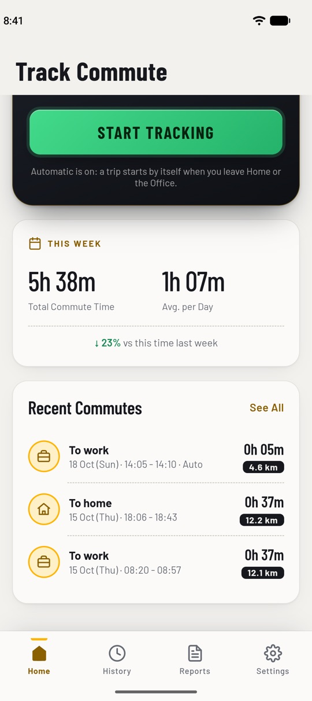

Automatic, and free
Starts and stops by itself
Save your Home and Office once. From then on, leaving one starts a trip, at any time of day, and reaching the other saves it.
- Errands are ignored: a trip only counts if it ends at the other place
- A notification shows when a trip starts, with a "Not a commute" button
- Prefer to stay in control? Tap Start and Stop in the app, on the notification, or on the home-screen widget
- Works with the screen locked
